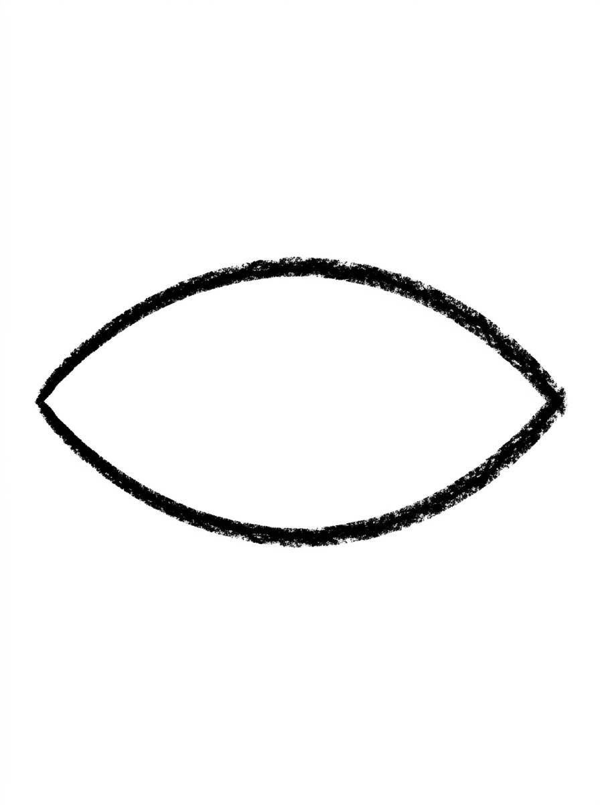
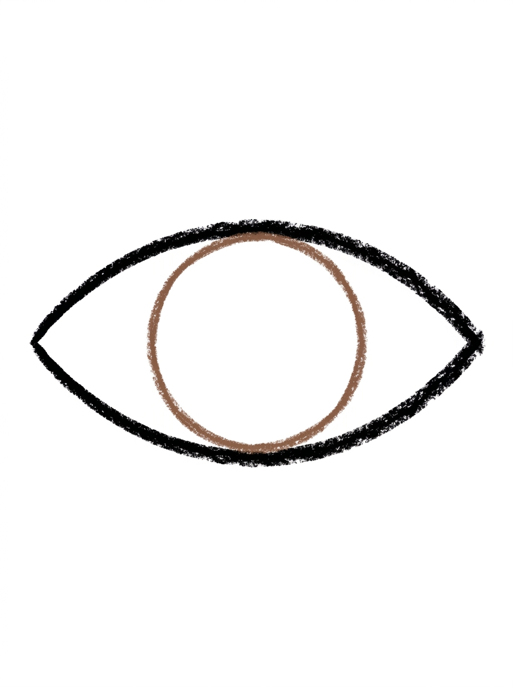
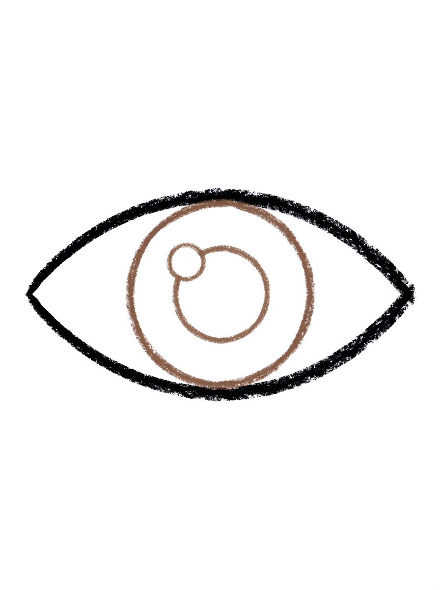
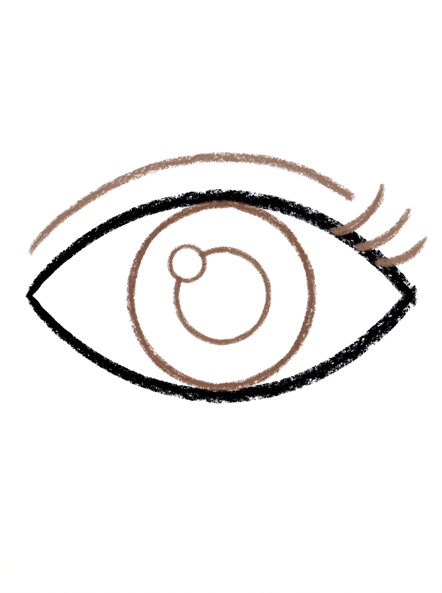
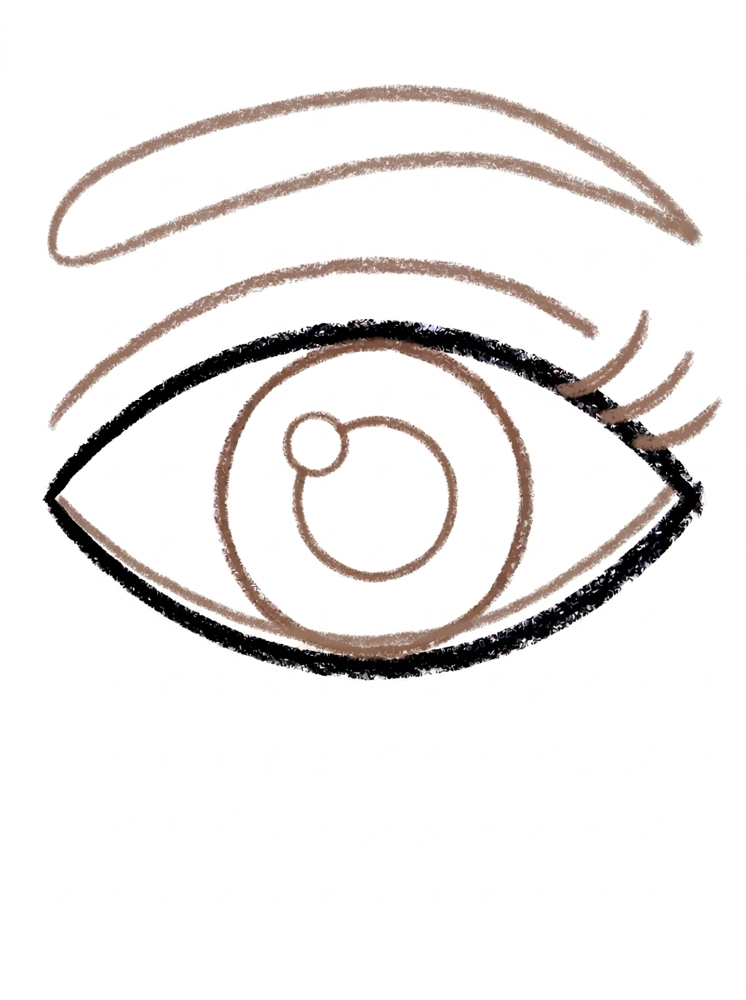

Eye Drawing for Kids How to Draw An Eye in 6 Easy Steps
Quick Answer
Draw an eye in six easy steps: a big almond outline, a circle iris touching the top and bottom, a smaller pupil with a tiny shine spot, a curved eyelid line with three lashes, then an eyebrow and a thin waterline. Color the iris warm brown. Made for ages 3 and up — no signup needed, just print and draw.
At a Glance
- Subject: How to draw an eye
- Ages: 3+
- Steps: 6 steps
- Time: ~15 min
- Difficulty: Easy
- Supplies: Paper, crayons
Drawing an eye feels like a big-kid skill, but this one is really just circles nested inside a pointed oval. Kids are always amazed that the tiny shine spot — one little circle — is what makes the finished eye look real and sparkly.
✏️ Draw Your Eye in 6 Easy Steps
One step per box — this step by step eye drawing shows each new part in a different color so kids can see exactly what changed.
Step 1: The Eye Outline

Draw one big almond shape in the middle of your paper, pointy at both ends. This shape is the outline of your eye.
Step 2: The Iris

Draw one big circle in the center of the eye outline, big enough to touch the top and bottom edges. This round part is the iris, the colored part of the eye.
Step 3: The Pupil and Shine Spot

Draw a smaller circle right in the center of the iris for the pupil. Then add one tiny circle at the top left of the pupil — that's the shine spot that makes the eye sparkle.
Step 4: The Eyelid and Lashes

Draw one thick curved line just above the top edge of the eye, following its curve. Then add three short lashes flicking up from the outer corner of the eye.
Step 5: The Eyebrow and Waterline

Draw one long curved band floating above the eye for the eyebrow, thicker in the middle and pointy at both ends. Then add one thin curved line inside the bottom of the eye, following the lower edge.
Step 6: Color It In

Color your eye! Warm brown for the iris, black for the pupil, eyelid line and lashes, white for the shine spot, and dark brown for the eyebrow. Great drawing!
📊 Eye Drawing by Age
Every age can join in — just adjust the job.
| Age | What they can do | Tip |
|---|---|---|
| 3-4 | Draw the big almond outline and the iris circle, and choose the eye color. | Skip the lashes and waterline for the youngest artists — the outline, iris, and pupil already make a complete eye. |
| 4-5 | Add the pupil with its tiny shine spot and the thick curved eyelid line. | The shine spot is small and easy to forget; point it out before coloring, since it's the detail that makes the eye look alive. |
| 6+ | Complete all six steps, including the three lashes, the floating eyebrow, and the thin waterline. | Offer a mirror after drawing — kids love comparing their drawn eye to their real one and spotting the same parts. |
🖨️ Download Your Free Eye Drawing Printable
The printable lays out all 6 steps one per box, big enough for little hands — kids draw right alongside each step.
⬇️ Open Free Printable 🖨️ Print🎁 Free printable for ages 3+
👁️ Eye Spy Challenge
Turn the finished eye into an 'eye spy' game: draw three eyes on one page — one brown, one blue, one green — with a different number of lashes on each, then ask a family member to find the eye with three lashes, or the only green eye. It turns a drawing exercise into a looking game, and drawing the same eye three times is exactly the repetition that makes the shapes stick.
What You'll Need to Draw An Eye
You need a pencil, an eraser, and crayons or markers. The tutorial colors the iris warm brown with a black pupil, eyelid line, and lashes, a white shine spot, and a dark brown eyebrow — but blue, green, and hazel irises all work if your child wants the eye to match their own.
What They're Learning
This tutorial builds precision circle skills: a big iris circle fitted inside an almond outline, a centered pupil circle, and a tiny shine-spot circle — three sizes of the same shape, each placed deliberately. Kids also practice curved lines that follow an existing shape (the eyelid line, the waterline, the eyebrow band), learn real eye anatomy words (iris, pupil, eyelid, lashes, waterline), and use left-right awareness to put the shine spot and corner lashes on the correct side.
Make It Yours
Color the iris blue, green, or hazel to match family members; draw a matched pair of eyes by moving the iris slightly left or right so they're looking sideways; add a second tiny shine dot for extra sparkle; or go cartoon-style with huge lashes and a rainbow iris. A page of eyes in every color makes a striking wall display.
🛒 Our Favorite Drawing Supplies
These are the supplies we reach for in our own home — washable (because kids), quality paper, and enough colors to avoid fights.
As an Amazon Associate, MomYouNeedThis earns from qualifying purchases — at no extra cost to you.
💡 Eye Drawing Tips for Parents
The iris circle is the step that makes or breaks this drawing: it needs to be big enough to touch the top and bottom edges of the almond outline. A too-small iris floating in white space reads as a button, not an eye — so if your child draws it small, gently suggest a second, bigger try rather than erasing and correcting their work yourself.
Watch the shine spot in step 3. It sits at the top left inside the pupil, and the pupil's circle should stay complete around it. This tiny detail is the one kids point to with pride, so slow down there. For left-handed kids drawing a right-side eye, flipping the whole tutorial (lashes on the other corner) is perfectly fine — eyes come in pairs.
✏️ Eye Drawing Step by Step
An eye looks detailed and 'grown-up,' which is exactly why kids feel proud when they pull one off. But break it down and an eye is just circles inside a pointed oval — an almond outline, a big circle, a smaller circle, and a tiny circle — decorated with three curved lines.
The step-by-step approach also teaches real anatomy without a lecture. By the end, your child knows the words iris, pupil, eyelid, lashes, eyebrow, and waterline, because they drew each one and had to find its place. Vocabulary learned with a pencil sticks far better than vocabulary from a diagram.
Keep the printed steps next to the paper and work in order — the later details (eyelid, lashes, eyebrow) only make sense once the iris and pupil are in place. If a step goes wobbly, the eraser handles it; eyes are forgiving because real eyes are slightly different from each other anyway.
See free eye printable for more.
✏️ One Shape Per Step, Six Steps Total
Step 1 is the almond outline, pointy at both ends. Step 2 drops a big circle into the center for the iris, sized to touch the top and bottom edges. Step 3 adds the smaller pupil circle dead center, plus one tiny shine spot circle at the pupil's top left.
Step 4 draws the thick curved eyelid line just above the eye's top edge and flicks three short lashes up from the outer corner. Step 5 floats a long curved eyebrow band above everything and adds one thin waterline inside the bottom edge.
Step 6 colors it: warm brown iris, black pupil, black eyelid line and lashes, the shine spot left white, and a dark brown eyebrow. Notice the build — three steps of circles, two steps of curved lines, one step of color. Nothing here needs a ruler, and the biggest skill practiced is placing a circle inside a shape on purpose.
See free eye printable for more.
👁️ Sparkly Eye Drawing
The difference between a flat eye and a sparkly eye drawing is one tiny circle: the shine spot at the top left of the pupil. It copies the way light reflects off a real eye, and kids are genuinely delighted by how much life it adds — it's the step where the drawing starts looking back at them.
To make the eye even more expressive, play with the parts around it. Longer lashes, a higher eyebrow, or a second smaller shine dot all change the mood of the same basic drawing. Drawing a pair of eyes — one looking left, one looking right, just by moving the iris circle — is an easy next experiment.
This is also a lovely tutorial to pair with a mirror. Have your child look at their own eye, find the iris, pupil, and the spot where light shines, then draw what they see. Observing first and drawing second is the habit every artist builds, at every age.
See free eye printable for more.
❓ Eye Drawing FAQs
What is the easiest way to draw an eye?
Start with one big almond shape — pointy at both ends — then put a big circle inside it for the iris. Add a smaller circle for the pupil, a tiny shine spot, and finish with an eyelid line, lashes, and an eyebrow. Each part is one simple shape added in order.
What age is this eye drawing for?
It's made for ages 3 and up, and it grows with kids well: a 3-year-old can manage the outline, iris, and pupil, while older kids enjoy the trickier details like the lashes, waterline, and eyebrow.
What supplies do we need?
A pencil, an eraser, paper, and crayons or markers. For the tutorial's colors you'll want warm brown for the iris, black for the pupil, eyelid line, and lashes, white for the shine spot, and dark brown for the eyebrow.
Is the printable really free?
Yes — every printable on MomYouNeedThis is 100% free, including this eye drawing tutorial. There is no signup, no email, and no catch — just download, print, and draw.
How do I print it?
Open the PDF and choose Print, then set the scale to 100% (sometimes called Actual Size) so the steps print at full size. The tutorial is designed for regular US Letter paper, and plain printer paper works perfectly.
What is the iris and pupil?
The iris is the colored part of a real eye, and in this drawing it's the big circle inside the almond outline, big enough to touch the top and bottom edges. The pupil is the smaller black circle in its center, and the tiny white circle is the shine spot where light reflects.
My child's shine spot breaks the pupil circle. What happened?
Draw the almond with a gap or overlap right through it at step 3 and the pupil's circle line will look broken. The fix is simple: the tiny shine circle sits at the top left of the pupil, and the pupil's own circle should stay complete around it.
Can we use this to practice expressions?
Yes — the eyebrow shape is a great base for character drawing. A high curved eyebrow looks surprised, a lower flatter one looks calm, and tilting both ends changes the expression. It's a fun way to show kids how one line changes a whole face.
📚 Keep Exploring
- ✏️ All 53 Drawing Tutorials 53 free step-by-step drawing tutorials for kids.
- 🎀 Cute Coloring Free cute coloring pages for kids.
- ✏️ Drawing Practice Free printable drawing pre-writing worksheet for toddlers.